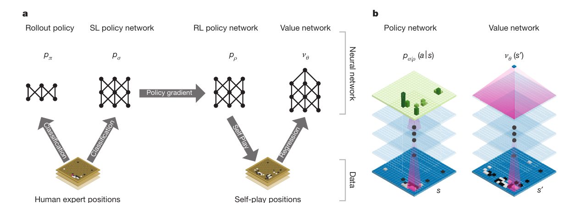
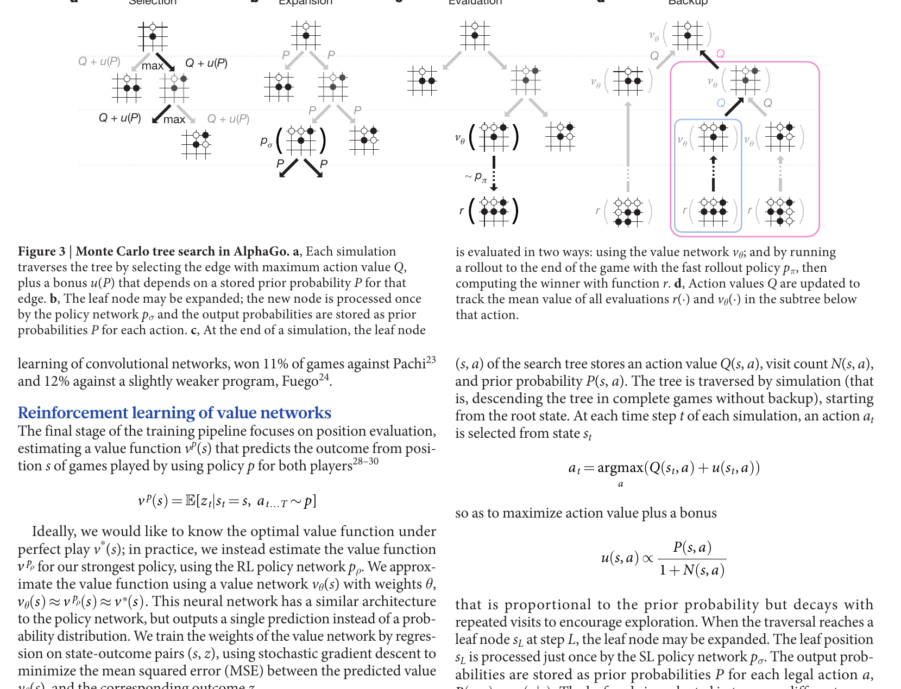
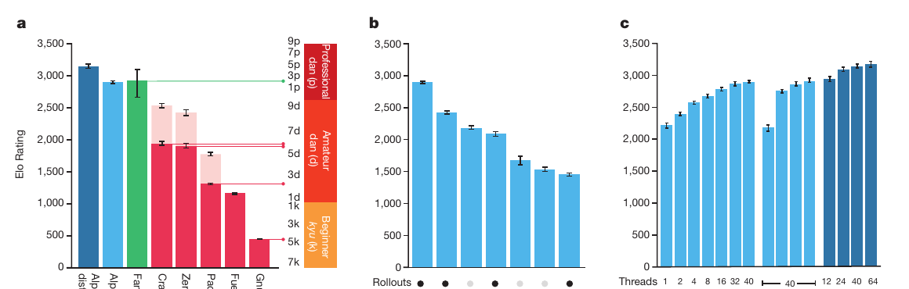
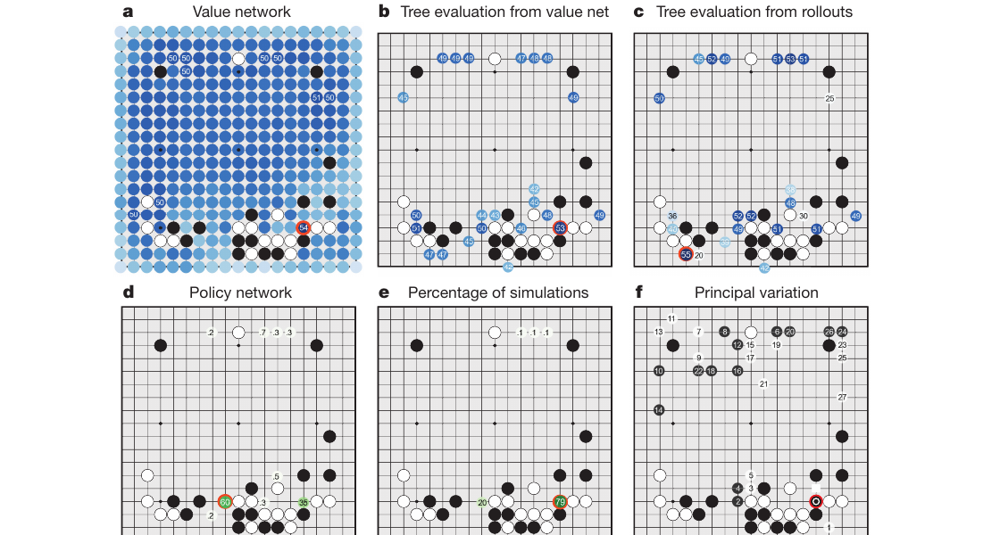

1 · Prerequisite bridge
A compass, a forecast, and a rehearsal budget.
A board game position offers many legal moves. You could ask, “Which move wins?”—but answering exactly would require considering every reply, then every reply to that reply. AlphaGo separates the work into three complementary jobs.
Imagine navigating an unfamiliar city with only a few minutes to rehearse routes. A policy is a compass: it ranks turns worth considering. A value is a forecast: it estimates whether a location is likely to lead to the destination. Tree search spends the rehearsal budget following the most promising routes, then revises its route notes after each rehearsal.
The analogy has a boundary: AlphaGo’s policy and value are learned functions, not human-written rules or explanations. The search uses their outputs as numerical information.
2 · The failed baseline
Why not simply look all the way ahead?
For a game tree with branching factor b and depth d, exhaustive search has roughly bd move sequences. The paper gives Go as approximately b ≈ 250 and d ≈ 150. That is far beyond direct enumeration.
Two levers reduce the tree. A value function cuts depth by estimating the outcome before a game ends. A policy cuts breadth by focusing computation on likely-good actions. Monte Carlo tree search learns which local branches deserve repeated simulation.
3 · Name the actors before the loop
Three numbers live on every explored edge.
A state s is a board position; an action a is a legal move. The tree stores information about an edge (s, a), not merely about a stone on the board.
Prior probability. From the supervised-learning policy pσ. It says which legal moves the policy initially considers promising.
Visit count. The number of simulations that travelled through this edge. Repeated visits make its current estimate less uncertain.
Action value. The mean evaluation observed beneath this edge. It is revised after simulations return information.
The paper’s Figure 3 uses an action-value term plus a bonus that is proportional to the stored prior and falls as the edge is visited more often:
At each in-tree state, the system selects the edge maximizing Q(s, a) + u(s, a). The proportionality leaves a scale constant unspecified in the paper’s main-text teaching equation, so the calculations below use c = 1 only as a transparent classroom scale.
3a · The paper's full system
Learn the guides, then let search use them.
The search loop needs more than a board evaluator. The paper trains a fast rollout policy, then a supervised policy from expert moves, an improved reinforcement-learning policy from self-play, and a value network that estimates outcomes from positions. Those learned parts make the later search decisions informed rather than blind.

4 · The mechanism
One simulation is an argument that travels down, then evidence that travels back.
- Select. From the root, follow the action that maximizes current value plus its exploration bonus.
- Expand. On reaching an unexpanded leaf sL, run the supervised policy once and store P(s, a) = pσ(a | s)L for its legal moves.
- Evaluate. Estimate the leaf by both the value network vθ(sL) and a full rollout using the faster rollout policy pπ.
- Back up. Update the edges traversed by that simulation: their visit counts grow and their action values become means over evaluations.

5 · Worked traces
Calculate why an uncertain branch gets another look.
Trace A · Selection
At one state, compare two legal edges with a classroom score Q + P/(1+N).
| Edge | Q | P | N | Selection score |
|---|---|---|---|---|
| North | 0.62 | 0.40 | 7 | 0.62 + 0.40/8 = 0.67 |
| East | 0.54 | 0.72 | 1 | 0.54 + 0.72/2 = 0.90 |
Result: choose East. Its current value is lower, but its high prior and low visit count make it worth exploring. This is not exploitation alone; the bonus stops the search from endlessly recycling its first apparent winner.
Trace B · Evaluation and backup
Suppose the newly reached leaf has value-network estimate vθ(sL) = 0.80. A fast rollout reaches a terminal outcome zL = 0.20. With a teaching mixing weight λ = 0.25:
If East previously had N = 1 and Q = 0.54, one simple mean update gives N′ = 2 and Q′ = (0.54 + 0.65)/2 = 0.595. The exact production system tracks separate value and rollout statistics before combining them; this simplified trace exposes the central idea: a leaf evaluation becomes a revised estimate for every edge on the route to that leaf.
Predict before reveal · When does the choice flip?
North’s score stays 0.67. East has Q = 0.54, P = 0.72. Predict how many prior East visits it takes before North becomes the selected edge.
Static reading: at 1 visit, East scores 0.90 and wins. At 5 visits, East scores 0.66, so North narrowly wins. Revisiting an edge reduces only the exploration bonus in this simplified calculation.
5a · Read the component evidence
The paper measures both strength and the path to a move.
Before reading the headline tournament numbers, inspect what the controlled component comparisons and one real position show. These figures make the system-level claim more specific than “a neural network beat Go.”


6 · Evidence, not mythology
The result supports a particular combination under stated compute conditions.
The paper reports an internal tournament in which single-machine AlphaGo won 494 of 495 games against other Go programs: 99.8%. It also reports AlphaGo defeating European champion Fan Hui by 5–0. These are striking 2015 evaluations, but each result belongs to the system, opponents, time controls, hardware, and game setting used there.
| Paper evidence | What it says | Careful reading |
|---|---|---|
| Figure 4b, PDF p. 4 / printed p. 487 | Under approximately 5 seconds per move, AlphaGo variants combining components outperformed the no-search policy-network-only version in the plotted internal tournament. | Supports the complementarity of search, policy, value, and rollouts in that experiment; it is not a universal ranking across all Go systems or later AlphaGo versions. |
| Text, PDF p. 5 / printed p. 488 | Single-machine AlphaGo won 494/495 games (99.8%) against other Go programs; distributed AlphaGo won the Fan Hui match 5–0. | Do not remove the opponents, setup, or date and turn it into “the model solved Go.” |
Evidence-reading check
Why is “99.8%” not enough by itself? A win rate needs its comparison set and evaluation conditions. Here it refers to the paper’s internal tournament versus particular Go programs, with the stated time and hardware setup—not every Go program, every human, or the same system as later AlphaGo work.
7 · Boundaries and misconceptions
Shorter search is not free intelligence.
Resource boundary. The final single-machine version used 40 search threads, 48 CPUs, and 8 GPUs; the distributed version used 40 search threads, 1,202 CPUs, and 176 GPUs (PDF p. 4 / printed p. 487). The achievement was not a small network taking one forward pass.
Misconception: the policy network chooses AlphaGo’s final move directly.
Not in the complete system. The policy supplies priors and supports rollouts, but after search AlphaGo selects the most visited root move. Search has had a chance to revise the policy’s first preference.
Misconception: the value network tells the exact winner.
It estimates expected outcome for a position under the learned policy. The paper combines it with rollout outcomes because the two estimates have complementary strengths.
Misconception: this paper is AlphaGo Zero.
No. This 2016 AlphaGo used supervised learning from human expert games, a separate fast rollout policy, and handcrafted 19 × 19 × 48 input features. Later systems changed that recipe substantially.
8 · Active recall
Close the page in your head, then check it.
What do a policy and a value reduce in a search tree?
A policy reduces effective breadth by concentrating on promising actions. A value reduces effective depth by estimating the outcome from a non-terminal position.
What are P, N, and Q on an AlphaGo search edge?
P is a policy prior, N is the number of simulations through the edge, and Q is its mean action-value estimate.
Why include an exploration bonus in selection?
It gives plausible but rarely visited moves a chance to be tested, rather than always choosing only the largest current Q.
What are the four stages of one MCTS simulation here?
Select, expand, evaluate, and back up. The leaf is evaluated both by the value network and a rollout in the main-text description.
What does the 99.8% result not establish?
It does not establish a universal or timeless win rate. It is scoped to the paper’s internal tournament, opponents, resources, and time controls.
9 · Connect it to your mental map
Planning turns learned predictions into a decision procedure.
DQN: evaluate one action vs. search a tree
DQN learns an action-value estimate and acts from it. AlphaGo also learns estimates, then allocates extra computation at decision time to search how moves change the future.
Attention: learned routing
Attention allocates a weighted read over information. AlphaGo’s policy allocates a search budget over moves. Both reduce a large choice set, but only tree search backs information through imagined future branches.
ResNet: representation is not the whole system
Residual networks improved deep vision optimization. AlphaGo used deep convolutional networks as learned components inside a larger planning loop; architecture, learning objective, and decision algorithm remain distinct layers.
MAML: adaptation vs. deliberation
MAML prepares parameters to change after task data. AlphaGo keeps parameters fixed during one move but changes its temporary search statistics after each simulation. Both improve behaviour through a second, structured update loop.
10 · Takeaway
A search tree becomes useful when learning tells it where to look and how to stop.
AlphaGo did not replace search with a neural network. Its policy concentrated exploration, its value estimated unfinished positions, and MCTS turned repeated simulated evidence into a final move choice. That division—proposal, evaluation, and deliberation—is the durable idea to carry beyond Go.